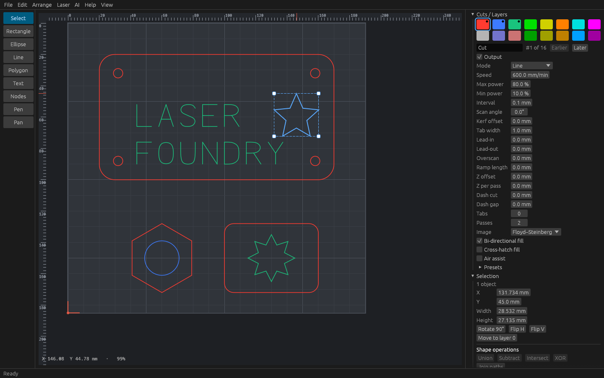
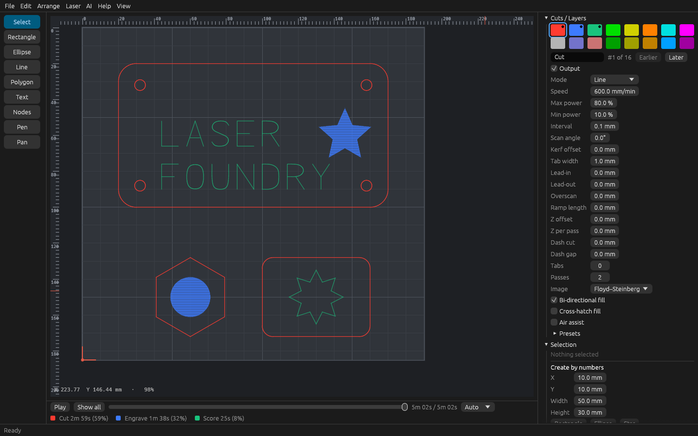
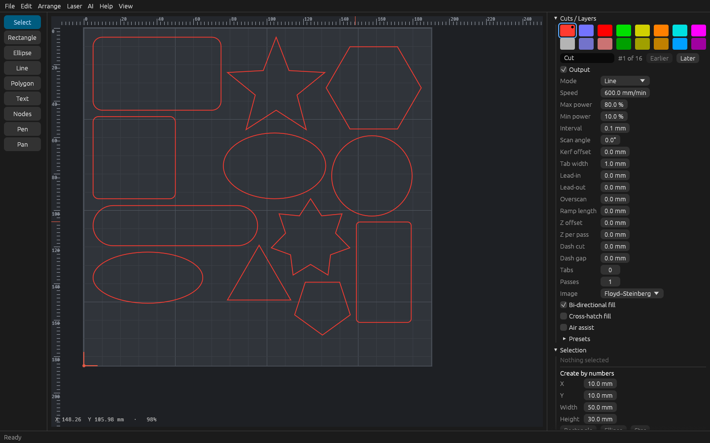

Laser engraving and cutting software, free and open
Lay out your artwork, give each colour its own speed and power, preview the toolpath, and send it to your machine. One engine drives the desktop app, the command line and your browser.
An early release. The whole pipeline works and is well tested, but everything that talks to a machine has so far been tried only against a built-in simulator, not on real hardware. Start with a laser-off test and a scrap of material; the bring-up guide walks through it.
See it work
Screenshots of the desktop app. The browser version has the same design, preview and G-code tools.



What it does
All of this is in the current release. The list of what is still missing is public too.
Bring work in
- SVG with shapes, groups, transforms, units, pictures and text
- DXF lines, polylines, arcs, circles, ellipses and splines
- PNG, JPEG and other pictures
- Its own
.laserfoundryproject file
Draw and edit
- Rectangle, ellipse, line, polygon, star and pen tools
- Node editing, boolean union, subtract, intersect and XOR
- Offset (grow or shrink), grids and circular arrays
- Align, distribute, snap, rulers, groups, and an undo history you can jump around in
Text
- A built-in single-line font for quick scoring and engraving
- Filled outlines from a font file you choose, with a font browser and preview
- Text on a path, vertical text, mixed directions
Pictures
- Brightness, contrast, gamma, negative, crop and sharpen
- Several dither modes for engraving photos
- Trace a picture into vector shapes
Cut settings
- 16 layers: line, fill, or fill and line
- Speed, power, passes, fill interval and angle, kerf offset
- Tabs, lead-ins, overscan, perforation, cross-hatch
- Per-shape overrides and cut order, material test grids, presets and templates
Run the machine
- A steady serial connection with live status
- Jog, home, frame, set and go to the origin, a nine-point start anchor
- Pause, resume, run from a line, resume after a power cut
- Z axis and rotary support
Built to be safe
- Output that would leave the bed is refused, not quietly trimmed
- Comments in a job cannot smuggle in commands
- Stopping a job resets the controller so the laser goes off
- No
unsafecode, no crashes on broken files: importers are fuzz-tested
Never lose work
- Autosave with recovery after a crash
- A prompt before anything discards unsaved changes
- Every edit is one undo step, and a failed command leaves no trace
Scripts and agents
- A command line that turns a file into G-code and runs JSON command scripts
- Every command is also offered as a Model Context Protocol tool for AI agents
Share and sell
- Publish your drawing to MakerFoundry as a private draft, from the File menu
- You set the title, licence and price on MakerFoundry; nothing is public until you publish it there
- Uses the same Foundry Account as the AI features
Optional AI help
- Design from a prompt, redraw a picture, ask about lasering
- Off until you opt in; uses a Foundry account and credits
For everyone
- Screen-reader support and an editable shortcut map
- Light and dark themes, and a tablet mode
- Translated menus, messages and errors
Open and independent
- MIT or Apache-2.0 licensed, written in Rust
- Built clean-room from public documentation; nothing copied from other laser software
- Unaffiliated with other laser software vendors
Machines
Honest status, as of this release.
| Controller | Status |
|---|---|
| GRBL (most hobby diode and CO2 machines) | The main target. Complete, tested against a built-in simulator; waiting for reports from real machines. |
| Marlin with a laser | Experimental. Written from the public documentation and tested only against a simulator. |
| Smoothieware | Experimental, through the GRBL-style link. |
| Ruida and other closed controllers | Not supported. |
Get it
Windows (x64), macOS (Apple silicon) and Linux (x64) downloads are on the releases page, each with the desktop app and the command-line tool. Or open the browser version: nothing to install.